Animatable Gaussians: Learning Pose-dependent Gaussian Maps for High-fidelity Human Avatar Modeling
Zhe Li1, Zerong Zheng2, Lizhen Wang1, Yebin Liu1 1 Department of Automation, Tsinghua University 2 NNKosmos Technology https://animatable-gaussians.github.io/
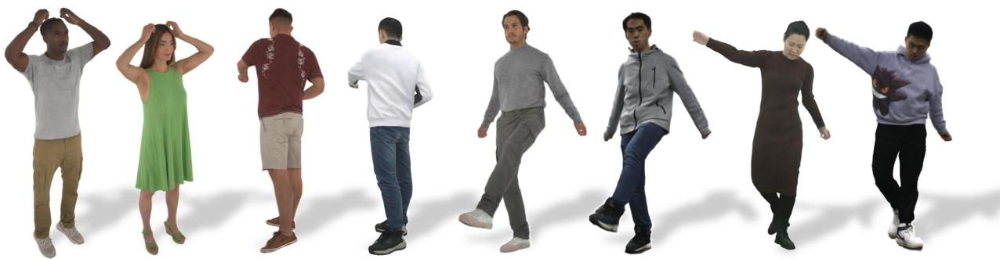
Figure 1. Lifelike animatable avatars with highly dynamic, realistic and generalized details created by our method.
Abstract
Modeling animatable human avatars from RGB videos is a long-standing and challenging problem. Recent works usually adopt MLP-based neural radiance fields (NeRF) to represent 3D humans, but it remains difficultfor pure MLPs to regress pose-dependent garment details. To this end, we introduce Animatable Gaussians, a new avatar representation that leverages powerful 2D CNNs and 3D Gaussian splatting to create high-fidelity avatars. To associate 3D Gaussians with the animatable avatar, we learn a parametric template from the input videos, and then parameterize the template on twofront & back canonical Gaussian maps where each pixel represents a 3D Gaussian. The learned template is adaptive to the wearing garments for modeling looser clothes like dresses. Such template-guided 2D parameterization enables us to employ a powerful StyleGANbased CNN to learn the pose-dependent Gaussian mapsfor modeling detailed dynamic appearances. Furthermore, we introduce a pose projection strategy for better generalization given novel poses. Overall, our method can create lifelike avatars with dynamic, realistic and generalized appearances. Experiments show that our method outperforms other state-of-the-art approaches.
1. Introduction
Animatable human avatar modeling, due to its potential value in holoportation, Metaverse, game and movie industries, has been a popular topic in computer vision for decades. However, how to effectively represent the human avatar is still a challenging problem.
Explicit representations, including both meshes and point clouds, are the prevailing choices, not just in human avatars but also throughout the entire 3D vision and graphics. However, previous explicit avatar representations [4, 49, 88] necessitate dense reconstructed meshes to model human geometry, thus limiting their applications in sparse-view video-based avatar modeling. In the past few years, with the rise of implicit representations, particularly neural radiance fields (NeRF) [54], many researchers tend to represent the 3D human as a pose-conditioned NeRF [40, 44, 58, 103] to automatically learn a neural avatar from RGB videos. However, implicit representations require a coordinate-based MLP to regress a continuous field, suffering from the low-frequency spectral bias [77] of MLPs. Although many works aim to enhance the avatar representation by texture feature [44] or structured local NeRFs [103], they fail to produce satisfactory results because they still rely on an MLP to output the continuous implicit fields.
Recently, 3D Gaussian splatting [33], an explicit and efficient point-based representation, has been proposed for both high-fidelity rendering quality and real-time rendering speed. In contrary to implicit representations, explicit pointbased representations have the potential to be parameterized on 2D maps [49], thus enabling us to employ more powerful 2D networks for modeling higher-fidelity avatars. Based on this observation, we present Animatable Gaussians, a new avatar representation that leverages 3D Gaussian splatting and powerful 2D CNNs for realistic avatar modeling. The first challenge lies in modeling general garments including long dresses. Inspired by point-based geometric avatars [43, 50], we first reconstruct a parametric template from the input videos and inherit the parameters of SMPL [45] by diffusing the skinning weights [43]. The character-specific template models the basic shapes of the wearing garments, even for long dresses. This allows us to animate 3D Gaussians in accordance with the template motion while avoiding density control in standard Gaussians [33], thereby ensuring the maintenance of a temporally consistent structure for 3D Gaussians in the following 2D parameterization.
For compatibility with 2D networks, it is necessary to parameterize the 3D template onto 2D maps. However, it remains challenging to unwrap the template with arbitrary topologies onto a unified and continuous UV space. Regarding that the front & back views almost cover the entire canonical human, we achieve the parameterization by orthogonally projecting the canonical template to both views. In each view, we define every pixel within the template mask as a 3D Gaussian, represented by its position, covariance, opacity, and color attributes, resulting in two front & back Gaussian maps. Similarly, given the driving pose, we obtain two posed position maps that serve as the pose conditions. Such a template-guided parameterization enables predicting pose-dependent Gaussian maps from the pose conditions through a powerful StyleGAN-based [30– 32] conditional generator, StyleUNet [80].
Benefiting from the powerful 2D CNNs and explicit 3D Gaussian splatting, our method can faithfully reconstruct human details under training poses. On the other hand, given novel poses, the generalization of animatable avatars has not been extensively explored. Due to the data-driven nature of learning-based avatar modeling, direct extrapolation to poses out of distribution will certainly yield unsatisfactory results. Therefore, we propose to employ Principal Component Analysis (PCA) to project the driving pose signal, represented by the position maps, into the PCA space, facilitating reasonable interpolation within the distribution of training poses. Such a pose projection strategy realizes reasonable and high-quality synthesis for novel poses.
In summary, our technical contributions are:
• Animatable Gaussians, a new avatar representation that introduces explicit 3D Gaussian splatting into avatar modeling to employ powerful 2D CNNs for creating lifelike avatars with high-fidelity pose-dependent dynamics.
• Template-guided parameterization that learns a characterspecific template for general clothes like dresses, and parameterizes 3D Gaussians onto front & back Gaussian maps for compatibility with 2D networks.
• A simple yet effective pose projection strategy that employs PCA on the driving signal, promoting better generalization to novel poses.
Overall, benefiting from these contributions, our method can create lifelike animatable avatars with highly dynamic, realistic and generalized appearances as shown in Fig. 1.
2. Related Work
2.1. Mesh-based Human Avatars
The polygon mesh is the most popular 3D representation for its compatibility with traditional rendering pipelines. To model animatable human avatars using meshes, early approaches propose to reconstruct a character-specific textured mesh and animate it by physical simulation [16, 72] or retrieval from a database [89]. Recently, researchers tend to utilize neural networks to model dynamic textures and motions. Bagautdinov et al. [4], Xiang et al. [87, 88] and Halimi et al. [21] reconstruct topology-consistent meshes from dense multi-view videos and learn the dynamic texture in a UV space. DDC [19] and HDHumans [20] learn the deformation parameterized by both skeletons and embedded graph [76] of a pre-scanned template. DELIFFAS [37] employs DDC as a deformable template and parameterizes the light field around the body onto double surfaces for fast synthesis. These mesh-based methods require dense reconstruction, non-rigid tracking, or pre-scanned templates for representing dynamic humans. Besides, some works optimize the non-rigid deformation upon SMPL [45] from a monocular RGB [2, 3, 100] or RGB-D [5, 34] video, but the avatar quality is limited by the SMPL+D representation.
2.2. Implicit Function-based Human Avatars
Implicit function is a coordinate-based function, usually represented by an MLP, that outputs a continuous field, e.g., signed distance function (SDF) [27, 92], occupancy [52], and radiance (NeRF) [58] fields. In geometric avatar modeling, many works represent the human avatar as pose-conditioned SDF [13, 23, 69, 79, 82] or occupancy [6, 7, 10, 41, 52, 53] fields learned from human scans or depth sequences. In contrast, NeRF containing a density and color field is widely used in textured avatar modeling [14, 18, 28, 29, 57, 59, 73, 78, 85] because of its good differentiable property. Animatable NeRF [58] introduces SMPL deformation into NeRF for animatable human modeling. Neural Actor [44] and UV volumes [8] parameterize 3D humans on SMPL or DensePose [17] UV space, thus limiting modeling loose clothes far from the human body. SLRF [103] defines local NeRF around sampled nodes upon

Figure 2. Illustration of the pipeline. It contains two main steps: 1) Reconstruct a character-specific template from multi-view images. 2) Predict pose-dependent Gaussian maps through the StyleUNet, and render the synthesized avatar by LBS and differentiable rasterization.
SMPL and learns the pose-dependent dynamics in the local space. TAVA [40] models the human or animal deformation using only 3D skeletons without the requirement of a parametric model. ARAH [83] represents the avatar geometry as SDF and adopts SDF-based volume rendering [81, 95] for learning more plausible geometry from RGB videos. DANBO [74] employs GNNs to learn the part-based pose feature. Li et al. [42] introduce a learnable pose vocabulary to learn higher-frequency pose conditions for the conditional NeRF. Besides the body avatar, TotalSelfScan [12], X-Avatar [71] and AvatarReX [104] propose compositional full-body avatars for expressive control of the human body, hands and face. However, the implicit function-based methods usually adopt pure MLPs to represent the human avatar, yielding smooth or blurry quality due to the low-frequency bias of MLPs [77]. What’s worse, the rendering speed of these methods is usually slow because rendering from implicit fields requires dense sampling along a ray.
2.3. Point-based Human Avatars
Point cloud is also a powerful and popular representation in human avatar modeling. Given 3D scans of a character, SCALE [48] and POP [49] learn the non-rigid deformation of dense points on SMPL UV maps to represent the dynamic garment wrinkles. FITE [43] and CloSET [97] extract pose features from projective maps or Point-Net [62, 63] to avoid discontinuity on the UV map. SKiRT [50] and FITE learn a coarse template from the input scans and utilize learned or diffused skinning weights to animate loose clothes. Prokudin et al. [61] propose dynamic point fields for general dynamic reconstruction. This work and NPC [75] show results on avatars created from RGB videos using Point-NeRF [90]. However, applying Point-NeRF to avatar modeling still relies on a low-frequency coordinatebased MLP, struggling with the same problems in Sec. 2.2. On the other hand, point-based rendering via splatting [1, 36, 38, 60, 68, 96, 106–108] offers another probability for animatable avatar modeling. PointAvatar [102] learns a canonical point cloud and deformation field to model head avatars from a monocular video via PyTorch3D’s [66] differentiable point renderer. Recently, 3D Gaussian splatting (3DGS) [33], an efficient differentiable point-based rendering method, has been proposed for real-time photo-realistic scene rendering. In addition to applying 3DGS to dynamic scenes [47, 86, 93, 94], human reconstruction [101], editing [9, 70] and talking heads [64, 91], many concurrent works also introduce 3DGS into animatable human avatars. However, most of them [25, 35, 39, 65, 105] adopt MLPs to regress the Gaussian attributes, leading to blurry avatar appearances. ASH [55] and GaussianAvatar [24] parameterize the 3D character on a 2D UV map to predict Gaussian attributes using 2D CNNs, sharing similar ideas with us.
3. Method
3.1. Preliminary: 3D Gaussian Splatting
3D Gaussian splatting [33] is an explicit point-based 3D representation that consists of a set of 3D Gaussians. Each 3D Gaussian is parameterized by its position (mean) µ, covariance matrix Σ, opacity α and color c, and its probability density function is formulated as
where we omit the constant factor in Eq. 1. For rendering a 2D image, the 3D Gaussians are splatted onto 2D planes, resulting in 2D Gaussians. The pixel color C is computed by blending N ordered 2D Gaussians overlapping this pixel:
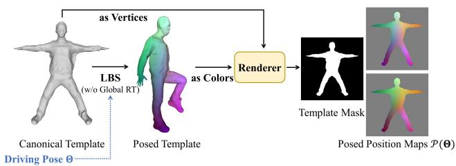
Figure 3. Illustration of the posed position maps.
where is the color of each 2D Gaussian, and is the blending weight derived from the learned opacity and 2D Gaussian distribution [106].
3.2. Overview
Given multi-view RGB videos of a character and the corresponding SMPL-X [56] registrations about the per-frame pose and shared shape, our objective is to create a lifelike animatable avatar. As illustrated in Fig. 2, our method contains two main steps:
-
Learning Parametric Template. We begin by selecting a frame with a near A-pose from the input videos, and then optimize a canonical SDF and color field to fit the multi-view images through SMPL skinning and SDF-based volume rendering [95]. The template mesh is subsequently extracted from the canonical SDF field using Marching Cubes [46]. We then diffuse the skinning weights from the SMPL vertices to the template surface, obtaining a deformable parametric template.
-
Learning Pose-dependent Gaussian Maps. Given a training pose, we first deform the template to the posed space via linear blend skinning (LBS) and render the posed vertex coordinates to canonical front & back views to obtain two position maps. The position maps serve as the pose condition and are translated into front & back Gaussian maps through a StyleUNet [80]. We then extract valid 3D Gaussians inside the template mask, and deform the canonical 3D Gaussians to the posed space by LBS. Eventually, we render the posed 3D Gaussians to a given camera view through differentiable splattingbased rasterization [33].
3.3. Avatar Representation
Learning Parametric Template. Given the multi-view videos, we first select one frame in which the character is under a near A-pose. Our goal is to reconstruct a canonical geometric model as the template from the multi-view images. Specifically, we represent the canonical character as an SDF and color field instantiated by an MLP. To associate the canonical and posed spaces, we precompute a skinning weight volume W in the canonical space by diffusing the weights from the SMPL surface throughout the whole 3D volume along the surface normal [43]. For each point in the posed space, we search its canonical correspondence by root finding [6]:
where LBS(·) is a linear blend skinning function that transforms a canonical point to its posed position in accordance with the SMPL pose Θ. Then the canonical correspondence is fed into the MLP to query its SDF and color, which are used to render RGB images by SDF-based volume rendering [95]. The rendered images are compared with the ground truth for optimizing the canonical fields via differentiable volume rendering. Finally, we extract the geometric template from the SDF field and query the skinning weights for each vertex in the precomputed weight volume W, obtaining a deformable parametric template.
Template-guided Parameterization. Previous human avatar representations in NeRF-based approaches [44, 58, 103] necessitate the coordinate-based MLPs for the formulation of the implicit NeRF function. However, MLPs have demonstrated a low-frequency bias [77], hindering their ability to model high-frequency human dynamics. In light of this observation, we replace MLPs with more powerful 2D CNNs for creating higher-quality human avatars. To ensure compatibility with 2D networks, the 3D representation of the human avatar needs to be parameterized in 2D space. Therefore, we propose to parameterize the 3D Gaussians anchored on the canonical template onto front & back views via orthogonal projection. As illustrated in Fig. 3, given a driving pose Θ, we first deform the template to the posed space via LBS. Note that we do not consider the global transformation in this skinning process, because the global orientation and translation would not change the human dynamic details. Then we take the posed coordinate as the vertex color on the canonical template, and render it to both front & back views by orthogonal projection, obtaining posed position maps and that serve as pose conditions for the network.
Pose-dependent Gaussian Maps. We employ a powerful StyleGAN-based CNN , StyleUNet [80] F, to predict pose-dependent Gaussian maps from the pose conditions:
where and are front and back pose-dependent Gaussian maps, respectively, and each pixel represents a 3D Gaussian [33] including a position, covariance, opacity and color. We also modulate the output color attributes on Gaussian maps with a view direction map V to model viewdependent variance like NeRF-based approaches [58]. We extract canonical 3D Gaussians inside the template mask from the pose-dependent Gaussian maps. It is worth mentioning that despite utilizing only front and back views for parameterizing the 3D Gaussians, the resulting point clouds still cover the side regions and hands of the human body as demonstrated in Fig. 4. The reason is that the projection to front & back views is orthographic, thus there exist sufficient 3D Gaussians to model these parts.
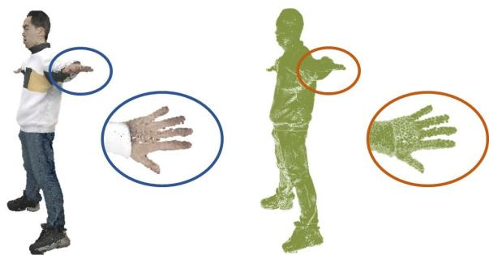
Figure 4. Canonical 3D Gaussians on side regions and hands.
LBS of 3D Gaussians. To render the synthesized avatar under the driving pose, we need to deform the canonical 3D Gaussians to the posed space. Specifically, given a canonical 3D Gaussian, we transform its position and covariance attributes:
where R and t are the rotation matrix and translation vector calculated with the skinning weights of each 3D Gaussian. Finally, we render the posed 3D Gaussians to a desired camera view through splatting-based rasterization (Eq. 2).
Training. To ensure that the position attribute of predicted Gaussian maps approximates the canonical human body, we opt to predict an offset map ∆O(Θ) on the parametric template instead of a position map. Our training losses include L1 and perceptual losses [98] between the rendered images and ground truth, and a regularization loss:
where λs are loss weights, and the regularization loss restrains the predicted offsets from being extremely large.
3.4. Pose Projection Strategy
Benefiting from the effective avatar representation, our method can reconstruct detailed human appearances under the training poses. However, given the inherently datadriven nature of learning-based avatars, addressing generalization to novel poses is also necessary and important. RAM-Avatar [11] trains a VAE to transform the testing pose into an in-distribution one. In this work, we propose to utilize Principal Component Analysis (PCA) to project a novel driving pose signal into the distribution of seen training poses for better generalization. Specifically, given a pose condition represented by posed position maps, we extract valid points and concatenate them as a vector (M is the point number). The feature of each training frame composes a matrix , where is the number of training frames. We perform PCA on producing N principal components and standard deviation of each component . Given position maps derived by a novel driving pose, we project the corresponding feature x into the PCA space by
where x¯ is the mean of X. Then we reconstruct the positions from the low-dimensional coefficient by
then we reshape into a M×3 tensor, and scatter it onto the position maps. To constrain the reconstructed position maps to lie in the distribution of training poses, we clip each component of within the bound of . Overall, the pose projection strategy ensures reasonable interpolation within the distribution of training poses, enabling better generalization to novel poses as shown in Fig. 10.
4. Experiments
Results. As shown in Fig. 1 and Fig. 5, our method can create realistic avatars with high-fidelity dynamic details from multi-view videos. More sequential results animated by challenging out-of-distribution poses [51] like sports and dancing can be found in the Supp. document and video.
Dataset. We mainly utilize two public datasets for the experiments, including 3 sequences with 24 views from THuman4.0 dataset [103] and 5 sequences with 160 views from ActorsHQ dataset [26] (but we only use 47 full-body views for avatar modeling). For the comparison with AvatarReX [104], we also request their dataset including 2 sequences with 16 views. THuman4.0 and AvatarReX datasets also provide the SMPL-X [56] registrations. We fit SMPL-X for ActorsHQ dataset using [99]. We split each sequence as training and testing chunks, and the training chunk contains 1500 ∼ 3000 frames.
Metric. We adopt Peak Signal-to-Noise Ratio (PSNR), Structure Similarity Index Measure (SSIM) [84], Learned Perceptual Image Patch Similarity (LPIPS) [98] and Frechet Inception Distance (FID) [22] for quantitative experiments.
4.1. Comparison
We compare our method with recent state-of-the-art works on avatar quality and generalization. These works include both body-only (TAVA [40], ARAH [83], SLRF [103], PoseVocab [42]) and full-body (AvatarReX [104]) avatars.
Body-only Avatars. We compare our method with TAVA, ARAH, SLRF, and PoseVocab on “subject00” and “subject02” sequences of THuman4.0 dataset [103]. We run

Figure 5. Example animatable avatars with high-fidelity dynamic appearances created by our method.
TAVA
ARAH
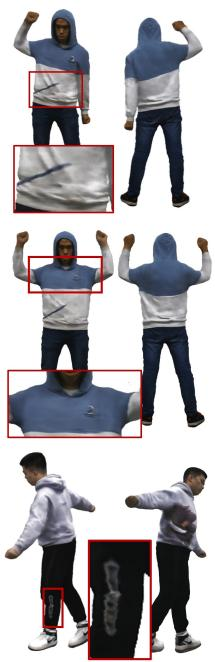
SLRF
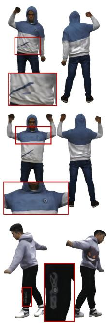
PoseVocab
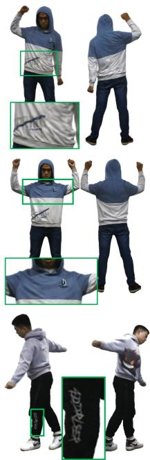
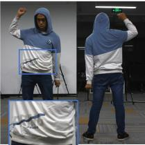
Ours
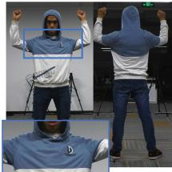
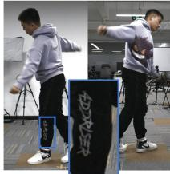
Ground Truth
Figure 6. Qualitative comparison with state-of-the-art body-only avatars on novel pose synthesis.
the released codes of TAVA, ARAH and PoseVocab on the dataset, and request the results of SLRF from the authors. We present qualitative comparisons on novel pose synthesis in Fig. 6. In contrast to other methods, our approach excels in animating highly realistic avatars with significant improvement on high-fidelity dynamic details, including garment wrinkles, logos and other textural patterns. The quantitative comparison is also performed on the testing chunk of the “subject00” sequence as shown in Tab. 1, and these numerical results prove that our method achieves more accurate animation. Although PoseVocab and SLRF introduce a learnable pose dictionary or local NeRFs to improve the representation ability of the NeRF MLP, they still suffer from the low-frequency bias [77] of MLPs and fail to create highly realistic avatars. Contrarily, our method leverages powerful 2D CNNs and explicit 3D Gaussian splatting, thus achieving modeling finer-grained dynamic appearances.
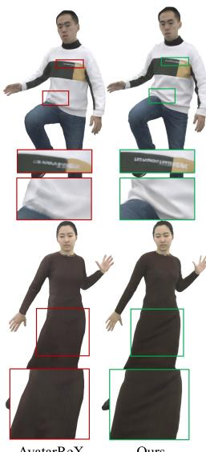
AvatarReX
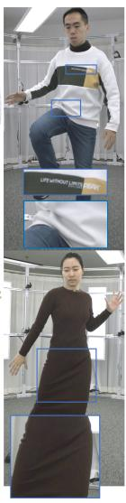
Ground Truth
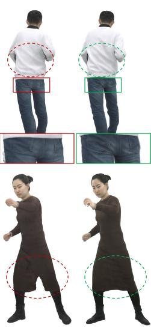
(a) Training Poses
AvatarReX
Ours
(b) Novel Poses
Figure 7. Qualitative comparison with AvatarReX on both training pose reconstruction (a) and novel view synthesis (b).
Table 1. Quantitative comparison with state-of-the-art bodyonly avatars.
| Method | PSNR↑ | SSIM↑ | LPIPS↓ | FID↓ |
| Ours | 28.0714 | 0.9739 | 0.0515 | 29.4831 |
| PoseVocab [42] | 26.3784 | 0.9707 | 0.0592 | 49.4541 |
| SLRF [103] | 26.9015 | 0.9724 | 0.0600 | 52.0613 |
| ARAH [83] | 22.3004 | 0.9616 | 0.1075 | 90.6077 |
| TAVA [40] | 26.8019 | 0.9705 | 0.0915 | 96.3474 |
Table 2. Quantitative comparison with AvatarReX.
| Method | PSNR↑ | SSIM↑ | LPIPS↓ | FID↓ |
| Ours | 30.6143 | 0.9803 | 0.0290 | 13.2417 |
| AvatarReX [104] | 23.2475 | 0.9567 | 0.0646 | 31.1387 |
Full-body Avatars. Full-body avatars including TotalSelf-Scan [12], X-Avatar [71] and AvatarReX [104] can realize expressive control of the body, hands and face. TotalSelf-Scan reconstructs full-body avatars from monocular selfrotation videos, and only displays animations that appear very rigid. X-Avatar requires 3D human scans under different poses as input for creating avatars. AvatarReX is the most relevant work with our method, i.e., creating avatars from multi-view videos. Fig. 7 shows the comparison with AvatarReX on both training and novel poses. Fig. 7 (a) demonstrates that our method can reconstruct more faithful and vivid details compared with AvatarReX. Although AvatarReX introduces local feature patches to encode more details, it remains constrained by the representation ability of the conditional NeRF MLPs. Fig. 7 (b) shows that given a novel pose, our method not only generates more realistic details but also produces more reasonable non-rigid deformation, particularly for long dresses, in comparison with AvatarReX. This is attributed to the ability of our method to learn pose-dependent deformations on a character-specific template that has already modeled the basic shape of the wearing garments. In contrast, AvatarReX learns sparse node translations on the naked SMPL model, resulting in artifacts for long dresses. Tab. 2 reports the quantitative comparison on training pose reconstruction. Our method also outperforms AvatarReX on the reconstruction accuracy.
(a)
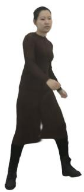
(b)
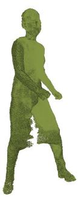
(c)
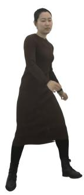
Figure 8. Ablation study of the parametric template. (a,b) Rendered results and 3D Gaussians using SMPL-X. (c,d) Rendered results and 3D Gaussians using the character-specific template.
(d)
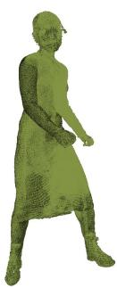
Animation Speed. We additionally compare our method with other works on the animation speed in Tab. 3. Benefiting from the efficient 3D Gaussian splatting [33], our method can realize fast inference for animation.
Conclusion. Overall, benefiting from the powerful 2D CNNs and explicit 3D Gaussian splatting, our method, Animatable Gaussians, achieves lifelike avatar modeling with more dynamic, realistic and generalized appearances in comparison to state-of-the-art approaches.
4.2. Ablation Study
We qualitatively evaluate the core contributions of our method in this subsection. Quantitative results and additional experiments can be found in the Supp. document.
Parametric Template. We evaluate the learned parametric template by replacing it with a naked parametric model, SMPL-X [56]. Fig. 8 shows that SMPL-X fails to represent the long dress whose topology is not consistent with the SMPL-X model, yielding poor generalization to novel poses. Conversely, our character-specific template is adaptively reconstructed from the input video to model the basic shape of the wearing garments.
Table 3. Comparison on animation speed. These framerates are evaluated on a PC with one RTX 3090 when rendering images at a resolution of . We highlight the highest and second-highest framerates.
| Method | TAVA [40] | ARAH [83] | SLRF [103] | PoseVocab [42] | AvatarReX [104] (PyTorch) | AvatarReX (TensorRT) | Ours |
| Framerate (FPS) ↑ | 0.003 | 0.07 | 0.16 | 0.20 | 0.03 | 25 | 10 |
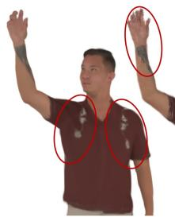
MLP
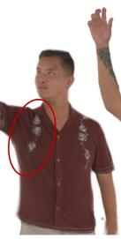
U-Net
StyleUNet
Ground Truth
Figure 9. Comparison between representations with different backbones on training pose reconstruction.
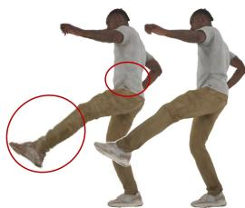
(a)
(b)
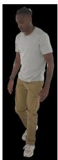
(c)
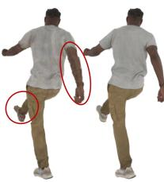
(d)
(e)
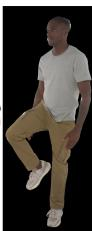
(f)
Figure 10. Ablation study of the pose projection strategy. (a,d) and (b,e) are the animation results without and with the pose projection strategy, respectively. (c,f) are the reference images with the closest pose in the training dataset.
Backbones. To demonstrate the superior representation ability of 2D CNNs (StyleUNet in our settings), we replace StyleUNet with a coordinate-based MLP and a standard U-Net [67], respectively. The MLP takes a canonical point and pose vector as input, and returns the 3D Gaussian attributes of this point. While the standard U-Net replaces the StyleUNet as the backbone. Fig. 9 shows the animation results of our method with StyleUNet and the baselines with MLPs and U-Net, respectively. First, it demonstrates that 2D CNNs are able to regress more detailed and realistic appearances, while MLPs suffer from limited representation ability, yielding blurry animation results. Second, Style-UNet outperforms the standard U-Net because of the additional modules (including style modulation and “To/From-
RGB” modules) inherited from StyleGAN [30]. Overall, the 2D parameterization and StyleUNet enable our method to model high-quality human dynamic appearances.
Pose Projection. We evaluate the pose projection strategy by removing it, i.e., directly inputting the position map into the StyleUNet. Fig. 10 shows the animation results with and without the pose projection under novel poses, respectively. It demonstrates that direct extrapolation with the novel position map results in unreasonable 3D Gaussians, since no similar poses in the training dataset. In contrast, the pose projection guarantees that the reconstructed position maps (Eq. 8) lie within the distribution of training poses, leading to reasonable and vivid synthesized appearances.
5. Discussion
Conclusion. We present Animatable Gaussians, a new avatar representation for creating lifelike human avatars with highly dynamic, realistic and generalized appearances from multi-view RGB videos. Compared with implicit NeRF-based approaches, we introduce the explicit pointbased representation, 3D Gaussian splatting, into the avatar modeling, and leverage powerful 2D CNNs for modeling higher-fidelity human appearances. Based on the proposed template-guided parameterization and pose projection strategy, our method can not only faithfully reconstruct detailed human appearances, but also generate realistic garment dynamics for novel pose synthesis. Overall, our method outperforms other state-of-the-art avatar approaches, and we believe that the proposed 3D Gaussian splatting-based avatar representation will make progress towards effective and efficient 3D human representations.
Limitation. Our method entangles the modeling of the human body and clothes, limiting to changing the clothes of the avatar for applications like virtual try-on. A possible solution is to separately represent the body and clothes with multi-layer 3D Gaussians as NeRF-based approaches [14, 15]. Moreover, our method relies on the multi-view input to reconstruct a parametric template, limiting the application for modeling loose clothes from a monocular video. Potential Social Impact. Our method can synthesize virtual motions of the human avatar to generate fake videos, so we must carefully employ this technology.
Acknowledgement. This paper is supported by National Key R&D Program of China (2022YFF0902200), the NSFC project No.62125107 and the Beijing Municipal Science & Technology Z231100005923030.
References
[1] Kara-Ali Aliev, Artem Sevastopolsky, Maria Kolos, Dmitry Ulyanov, and Victor Lempitsky. Neural point-based graphics. In ECCV, pages 696–712. Springer, 2020. 3
[2] Thiemo Alldieck, Marcus Magnor, Weipeng Xu, Christian Theobalt, and Gerard Pons-Moll. Detailed human avatars from monocular video. In 3DV, pages 98–109. IEEE, 2018. 2
[3] Thiemo Alldieck, Marcus Magnor, Weipeng Xu, Christian Theobalt, and Gerard Pons-Moll. Video based reconstruction of 3d people models. In CVPR, pages 8387–8397, 2018. 2
[4] Timur Bagautdinov, Chenglei Wu, Tomas Simon, Fabian Prada, Takaaki Shiratori, Shih-En Wei, Weipeng Xu, Yaser Sheikh, and Jason Saragih. Driving-signal aware full-body avatars. TOG, 40(4):1–17, 2021. 1, 2
[5] Andrei Burov, Matthias Nießner, and Justus Thies. Dynamic surface function networks for clothed human bodies. In ICCV, pages 10754–10764, 2021. 2
[6] Xu Chen, Yufeng Zheng, Michael J Black, Otmar Hilliges, and Andreas Geiger. Snarf: Differentiable forward skinning for animating non-rigid neural implicit shapes. In ICCV, pages 11594–11604, 2021. 2, 4
[7] Xu Chen, Tianjian Jiang, Jie Song, Max Rietmann, Andreas Geiger, Michael J Black, and Otmar Hilliges. Fast-snarf: A fast deformer for articulated neural fields. IEEE T-PAMI, 2023. 2
[8] Yue Chen, Xuan Wang, Xingyu Chen, Qi Zhang, Xiaoyu Li, Yu Guo, Jue Wang, and Fei Wang. Uv volumes for realtime rendering of editable free-view human performance. In CVPR, pages 16621–16631, 2023. 2
[9] Yiwen Chen, Zilong Chen, Chi Zhang, Feng Wang, Xiaofeng Yang, Yikai Wang, Zhongang Cai, Lei Yang, Huaping Liu, and Guosheng Lin. Gaussianeditor: Swift and controllable 3d editing with gaussian splatting. In CVPR, 2024. 3
[10] Boyang Deng, John P Lewis, Timothy Jeruzalski, Gerard Pons-Moll, Geoffrey Hinton, Mohammad Norouzi, and Andrea Tagliasacchi. Nasa neural articulated shape approximation. In ECCV, pages 612–628. Springer, 2020. 2
[11] Xiang Deng, Zerong Zheng, Yuxiang Zhang, Jingxiang Sun, Chao Xu, xiaodong Yang, Lizhen Wang, and Yebin Liu. Ram-avatar: Real-time photo-realistic avatar from monocular videos with full-body control. In CVPR, 2024. 5
[12] Junting Dong, Qi Fang, Yudong Guo, Sida Peng, Qing Shuai, Xiaowei Zhou, and Hujun Bao. Totalselfscan: Learning full-body avatars from self-portrait videos of faces, hands, and bodies. In NeurIPS, 2022. 3, 7
[13] Zijian Dong, Chen Guo, Jie Song, Xu Chen, Andreas Geiger, and Otmar Hilliges. Pina: Learning a personalized implicit neural avatar from a single rgb-d video sequence. In CVPR, 2022. 2
[14] Yao Feng, Jinlong Yang, Marc Pollefeys, Michael J. Black, and Timo Bolkart. Capturing and animation of body and clothing from monocular video. In SIGGRAPH Asia 2022 Conference Proceedings, 2022. 2, 8
[15] Yao Feng, Weiyang Liu, Timo Bolkart, Jinlong Yang, Marc Pollefeys, and Michael J Black. Learning disentangled avatars with hybrid 3d representations. arXiv preprint arXiv:2309.06441, 2023. 8
[16] Peng Guan, Loretta Reiss, David A Hirshberg, Alexander Weiss, and Michael J Black. Drape: Dressing any person. TOG, 31(4):1–10, 2012. 2
[17] Rıza Alp Guler, Natalia Neverova, and Iasonas Kokkinos.¨ Densepose: Dense human pose estimation in the wild. In CVPR, pages 7297–7306, 2018. 2
[18] Chen Guo, Tianjian Jiang, Xu Chen, Jie Song, and Otmar Hilliges. Vid2avatar: 3d avatar reconstruction from videos in the wild via self-supervised scene decomposition. In CVPR, pages 12858–12868, 2023. 2
[19] Marc Habermann, Lingjie Liu, Weipeng Xu, Michael Zollhoefer, Gerard Pons-Moll, and Christian Theobalt. Realtime deep dynamic characters. TOG, 40(4):1–16, 2021. 2
[20] Marc Habermann, Lingjie Liu, Weipeng Xu, Gerard Pons-Moll, Michael Zollhoefer, and Christian Theobalt. Hdhumans: A hybrid approach for high-fidelity digital humans. ACM SCA, 6(3):1–23, 2023. 2
[21] Oshri Halimi, Tuur Stuyck, Donglai Xiang, Timur Bagautdinov, He Wen, Ron Kimmel, Takaaki Shiratori, Chenglei Wu, Yaser Sheikh, and Fabian Prada. Pattern-based cloth registration and sparse-view animation. TOG, 41(6):1–17, 2022. 2
[22] Martin Heusel, Hubert Ramsauer, Thomas Unterthiner, Bernhard Nessler, and Sepp Hochreiter. Gans trained by a two time-scale update rule converge to a local nash equilibrium. NeurIPS, 30, 2017. 5
[23] Hsuan-I Ho, Lixin Xue, Jie Song, and Otmar Hilliges. Learning locally editable virtual humans. In CVPR, pages 21024–21035, 2023. 2
[24] Liangxiao Hu, Hongwen Zhang, Yuxiang Zhang, Boyao Zhou, Boning Liu, Shengping Zhang, and Liqiang Nie. Gaussianavatar: Towards realistic human avatar modeling from a single video via animatable 3d gaussians. In CVPR, 2024. 3
[25] Shoukang Hu and Ziwei Liu. Gauhuman: Articulated gaussian splatting from monocular human videos. In CVPR, 2024. 3
[26] Mustafa Is¸ık, Martin Runz, Markos Georgopoulos, Taras¨ Khakhulin, Jonathan Starck, Lourdes Agapito, and Matthias Nießner. Humanrf: High-fidelity neural radiance fields for humans in motion. TOG, 42(4):1–12, 2023. 5
[27] Boyi Jiang, Yang Hong, Hujun Bao, and Juyong Zhang. Selfrecon: Self reconstruction your digital avatar from monocular video. In CVPR, pages 5605–5615, 2022. 2
[28] Tianjian Jiang, Xu Chen, Jie Song, and Otmar Hilliges. Instantavatar: Learning avatars from monocular video in 60 seconds. In CVPR, pages 16922–16932, 2023. 2
[29] Wei Jiang, Kwang Moo Yi, Golnoosh Samei, Oncel Tuzel, and Anurag Ranjan. Neuman: Neural human radiance field from a single video. In ECCV, pages 402–418. Springer, 2022. 2
[30] Tero Karras, Samuli Laine, and Timo Aila. A style-based generator architecture for generative adversarial networks. In CVPR, pages 4401–4410, 2019. 2, 8
[31] Tero Karras, Samuli Laine, Miika Aittala, Janne Hellsten, Jaakko Lehtinen, and Timo Aila. Analyzing and improving the image quality of stylegan. In CVPR, pages 8110–8119, 2020.
[32] Tero Karras, Miika Aittala, Samuli Laine, Erik Hark¨ onen,¨ Janne Hellsten, Jaakko Lehtinen, and Timo Aila. Aliasfree generative adversarial networks. NeurIPS, 34:852– 863, 2021. 2
[33] Bernhard Kerbl, Georgios Kopanas, Thomas Leimkuhler,¨ and George Drettakis. 3d gaussian splatting for real-time radiance field rendering. TOG, 42(4):1–14, 2023. 1, 2, 3, 4, 7
[34] Hyomin Kim, Hyeonseo Nam, Jungeon Kim, Jaesik Park, and Seungyong Lee. Laplacianfusion: Detailed 3d clothedhuman body reconstruction. ACM Transactions on Graphics (TOG), 41(6):1–14, 2022. 2
[35] Muhammed Kocabas, Jen-Hao Rick Chang, James Gabriel, Oncel Tuzel, and Anurag Ranjan. Hugs: Human gaussian splats. In CVPR, 2024. 3
[36] Georgios Kopanas, Julien Philip, Thomas Leimkuhler, and¨ George Drettakis. Point-based neural rendering with perview optimization. In Computer Graphics Forum, pages 29–43. Wiley Online Library, 2021. 3
[37] Youngjoong Kwon, Lingjie Liu, Henry Fuchs, Marc Habermann, and Christian Theobalt. Deliffas: Deformable light fields for fast avatar synthesis. In NeurIPS, 2023. 2
[38] Christoph Lassner and Michael Zollhofer. Pulsar: Efficient sphere-based neural rendering. In CVPR, pages 1440–1449, 2021. 3
[39] Jiahui Lei, Yufu Wang, Georgios Pavlakos, Lingjie Liu, and Kostas Daniilidis. Gart: Gaussian articulated template models. In CVPR, 2024. 3
[40] Ruilong Li, Julian Tanke, Minh Vo, Michael Zollhofer,¨ Jurgen Gall, Angjoo Kanazawa, and Christoph Lassner.¨ Tava: Template-free animatable volumetric actors. In ECCV, pages 419–436. Springer, 2022. 1, 3, 5, 7, 8
[41] Zhe Li, Zerong Zheng, Hongwen Zhang, Chaonan Ji, and Yebin Liu. Avatarcap: Animatable avatar conditioned monocular human volumetric capture. In ECCV, pages 322–341. Springer, 2022. 2
[42] Zhe Li, Zerong Zheng, Yuxiao Liu, Boyao Zhou, and Yebin Liu. Posevocab: Learning joint-structured pose embeddings for human avatar modeling. In ACM SIGGRAPH Conference Proceedings, 2023. 3, 5, 7, 8
[43] Siyou Lin, Hongwen Zhang, Zerong Zheng, Ruizhi Shao, and Yebin Liu. Learning implicit templates for pointbased clothed human modeling. In ECCV, pages 210–228. Springer, 2022. 2, 3, 4
[44] Lingjie Liu, Marc Habermann, Viktor Rudnev, Kripasindhu Sarkar, Jiatao Gu, and Christian Theobalt. Neural actor: Neural free-view synthesis of human actors with pose control. TOG, 40(6):1–16, 2021. 1, 2, 4
[45] Matthew Loper, Naureen Mahmood, Javier Romero, Gerard Pons-Moll, and Michael J Black. Smpl: A skinned multi-person linear model. TOG, 34(6):1–16, 2015. 2
[46] William E Lorensen and Harvey E Cline. Marching cubes: A high resolution 3d surface construction algorithm. TOG, 21(4):163–169, 1987. 4
[47] Jonathon Luiten, Georgios Kopanas, Bastian Leibe, and Deva Ramanan. Dynamic 3d gaussians: Tracking by persistent dynamic view synthesis. arXiv preprint arXiv:2308.09713, 2023. 3
[48] Qianli Ma, Shunsuke Saito, Jinlong Yang, Siyu Tang, and Michael J Black. Scale: Modeling clothed humans with a surface codec of articulated local elements. In CVPR, pages 16082–16093, 2021. 3
[49] Qianli Ma, Jinlong Yang, Siyu Tang, and Michael J Black. The power of points for modeling humans in clothing. In ICCV, pages 10974–10984, 2021. 1, 2, 3
[50] Qianli Ma, Jinlong Yang, Michael J Black, and Siyu Tang. Neural point-based shape modeling of humans in challenging clothing. In 3DV, pages 679–689. IEEE, 2022. 2, 3
[51] Naureen Mahmood, Nima Ghorbani, Nikolaus F Troje, Gerard Pons-Moll, and Michael J Black. Amass: Archive of motion capture as surface shapes. In ICCV, pages 5442– 5451, 2019. 5
[52] Marko Mihajlovic, Yan Zhang, Michael J Black, and Siyu Tang. Leap: Learning articulated occupancy of people. In CVPR, pages 10461–10471, 2021. 2
[53] Marko Mihajlovic, Shunsuke Saito, Aayush Bansal, Michael Zollhoefer, and Siyu Tang. Coap: Compositional articulated occupancy of people. In CVPR, pages 13201– 13210, 2022. 2
[54] Ben Mildenhall, Pratul P Srinivasan, Matthew Tancik, Jonathan T Barron, Ravi Ramamoorthi, and Ren Ng. Nerf: Representing scenes as neural radiance fields for view synthesis. In ECCV, pages 405–421. Springer, 2020. 1
[55] Haokai Pang, Heming Zhu, Adam Kortylewski, Christian Theobalt, and Marc Habermann. Ash: Animatable gaussian splats for efficient and photoreal human rendering. In CVPR, 2024. 3
[56] Georgios Pavlakos, Vasileios Choutas, Nima Ghorbani, Timo Bolkart, Ahmed A. A. Osman, Dimitrios Tzionas, and Michael J. Black. Expressive body capture: 3d hands, face, and body from a single image. In CVPR, 2019. 4, 5, 7
[57] Bo Peng, Jun Hu, Jingtao Zhou, and Juyong Zhang. Selfnerf: Fast training nerf for human from monocular selfrotating video. arXiv preprint arXiv:2210.01651, 2022. 2
[58] Sida Peng, Junting Dong, Qianqian Wang, Shangzhan Zhang, Qing Shuai, Xiaowei Zhou, and Hujun Bao. Animatable neural radiance fields for modeling dynamic human bodies. In ICCV, pages 14314–14323, 2021. 1, 2, 4
[59] Sida Peng, Shangzhan Zhang, Zhen Xu, Chen Geng, Boyi Jiang, Hujun Bao, and Xiaowei Zhou. Animatable neural implicit surfaces for creating avatars from videos. arXiv preprint arXiv:2203.08133, 2022. 2
[60] Hanspeter Pfister, Matthias Zwicker, Jeroen Van Baar, and Markus Gross. Surfels: Surface elements as rendering primitives. In SIGGRAPH, pages 335–342, 2000. 3
[61] Sergey Prokudin, Qianli Ma, Maxime Raafat, Julien Valentin, and Siyu Tang. Dynamic point fields. In ICCV, pages 7964–7976, 2023. 3
[62] Charles R Qi, Hao Su, Kaichun Mo, and Leonidas J Guibas. Pointnet: Deep learning on point sets for 3d classification and segmentation. In CVPR, pages 652–660, 2017. 3
[63] Charles Ruizhongtai Qi, Li Yi, Hao Su, and Leonidas J Guibas. Pointnet++: Deep hierarchical feature learning on point sets in a metric space. In NeurIPS, 2017. 3
[64] Shenhan Qian, Tobias Kirschstein, Liam Schoneveld, Davide Davoli, Simon Giebenhain, and Matthias Nießner. Gaussianavatars: Photorealistic head avatars with rigged 3d gaussians. In CVPR, 2024. 3
[65] Zhiyin Qian, Shaofei Wang, Marko Mihajlovic, Andreas Geiger, and Siyu Tang. 3dgs-avatar: Animatable avatars via deformable 3d gaussian splatting. In CVPR, 2024. 3
[66] Nikhila Ravi, Jeremy Reizenstein, David Novotny, Taylor Gordon, Wan-Yen Lo, Justin Johnson, and Georgia Gkioxari. Accelerating 3d deep learning with pytorch3d. arXiv preprint arXiv:2007.08501, 2020. 3
[67] Olaf Ronneberger, Philipp Fischer, and Thomas Brox. Unet: Convolutional networks for biomedical image segmentation. In MICCAI, pages 234–241. Springer, 2015. 8
[68] Darius Ruckert, Linus Franke, and Marc Stamminger.¨ Adop: Approximate differentiable one-pixel point rendering. TOG, 41(4):1–14, 2022. 3
[69] Shunsuke Saito, Jinlong Yang, Qianli Ma, and Michael J Black. Scanimate: Weakly supervised learning of skinned clothed avatar networks. In CVPR, pages 2886–2897, 2021. 2
[70] Ruizhi Shao, Jingxiang Sun, Cheng Peng, Zerong Zheng, Boyao Zhou, Hongwen Zhang, and Yebin Liu. Control4d: Efficient 4d portrait editing with text. In CVPR, 2024. 3
[71] Kaiyue Shen, Chen Guo, Manuel Kaufmann, Juan Jose Zarate, Julien Valentin, Jie Song, and Otmar Hilliges. Xavatar: Expressive human avatars. In CVPR, pages 16911– 16921, 2023. 3, 7
[72] Carsten Stoll, Juergen Gall, Edilson De Aguiar, Sebastian Thrun, and Christian Theobalt. Video-based reconstruction of animatable human characters. TOG, 29(6):1–10, 2010. 2
[73] Shih-Yang Su, Frank Yu, Michael Zollhofer, and Helge¨ Rhodin. A-nerf: Articulated neural radiance fields for learning human shape, appearance, and pose. NeurIPS, 34: 12278–12291, 2021. 2
[74] Shih-Yang Su, Timur Bagautdinov, and Helge Rhodin. Danbo: Disentangled articulated neural body representations via graph neural networks. In ECCV, pages 107–124. Springer, 2022. 3
[75] Shih-Yang Su, Timur Bagautdinov, and Helge Rhodin. Npc: Neural point characters from video. In ICCV, 2023. 3
[76] Robert W Sumner, Johannes Schmid, and Mark Pauly. Embedded deformation for shape manipulation. TOG, 26(3): 80–es, 2007. 2
[77] Matthew Tancik, Pratul Srinivasan, Ben Mildenhall, Sara Fridovich-Keil, Nithin Raghavan, Utkarsh Singhal, Ravi Ramamoorthi, Jonathan Barron, and Ren Ng. Fourier features let networks learn high frequency functions in low dimensional domains. NeurIPS, 33:7537–7547, 2020. 1, 3, 4, 7
[78] Gusi Te, Xiu Li, Xiao Li, Jinglu Wang, Wei Hu, and Yan Lu. Neural capture of animatable 3d human from monocular video. In ECCV, pages 275–291. Springer, 2022. 2
[79] Garvita Tiwari, Nikolaos Sarafianos, Tony Tung, and Gerard Pons-Moll. Neural-gif: Neural generalized implicit functions for animating people in clothing. In ICCV, pages 11708–11718, 2021. 2
[80] Lizhen Wang, Xiaochen Zhao, Jingxiang Sun, Yuxiang Zhang, Hongwen Zhang, Tao Yu, and Yebin Liu. Styleavatar: Real-time photo-realistic portrait avatar from a single video. In SIGGRAPH Conference Proceedings, 2023. 2, 4
[81] Peng Wang, Lingjie Liu, Yuan Liu, Christian Theobalt, Taku Komura, and Wenping Wang. Neus: Learning neural implicit surfaces by volume rendering for multi-view reconstruction. In NeurIPS, 2021. 3
[82] Shaofei Wang, Marko Mihajlovic, Qianli Ma, Andreas Geiger, and Siyu Tang. Metaavatar: Learning animatable clothed human models from few depth images. NeurIPS, 34, 2021. 2
[83] Shaofei Wang, Katja Schwarz, Andreas Geiger, and Siyu Tang. Arah: Animatable volume rendering of articulated human sdfs. In ECCV, pages 1–19. Springer, 2022. 3, 5, 7, 8
[84] Zhou Wang, Alan C Bovik, Hamid R Sheikh, and Eero P Simoncelli. Image quality assessment: from error visibility to structural similarity. IEEE T-IP, 13(4):600–612, 2004. 5
[85] Chung-Yi Weng, Brian Curless, Pratul P Srinivasan, Jonathan T Barron, and Ira Kemelmacher-Shlizerman. Humannerf: Free-viewpoint rendering of moving people from monocular video. In CVPR, pages 16210–16220, 2022. 2
[86] Guanjun Wu, Taoran Yi, Jiemin Fang, Lingxi Xie, Xiaopeng Zhang, Wei Wei, Wenyu Liu, Qi Tian, and Xinggang Wang. 4d gaussian splatting for real-time dynamic scene rendering. In CVPR, 2024. 3
[87] Donglai Xiang, Fabian Prada, Timur Bagautdinov, Weipeng Xu, Yuan Dong, He Wen, Jessica Hodgins, and Chenglei Wu. Modeling clothing as a separate layer for an animatable human avatar. TOG, 40(6):1–15, 2021. 2
[88] Donglai Xiang, Timur Bagautdinov, Tuur Stuyck, Fabian Prada, Javier Romero, Weipeng Xu, Shunsuke Saito, Jingfan Guo, Breannan Smith, Takaaki Shiratori, et al. Dressing avatars: Deep photorealistic appearance for physically simulated clothing. TOG, 41(6):1–15, 2022. 1, 2
[89] Feng Xu, Yebin Liu, Carsten Stoll, James Tompkin, Gaurav Bharaj, Qionghai Dai, Hans-Peter Seidel, Jan Kautz, and Christian Theobalt. Video-based characters: creating new human performances from a multi-view video database. TOG, 30(4):1–10, 2011. 2
[90] Qiangeng Xu, Zexiang Xu, Julien Philip, Sai Bi, Zhixin Shu, Kalyan Sunkavalli, and Ulrich Neumann. Point-nerf: Point-based neural radiance fields. In CVPR, pages 5438– 5448, 2022. 3
[91] Yuelang Xu, Benwang Chen, Zhe Li, Hongwen Zhang, Lizhen Wang, Zerong Zheng, and Yebin Liu. Gaussian head avatar: Ultra high-fidelity head avatar via dynamic gaussians. In CVPR, 2024. 3
[92] Zhen Xu, Sida Peng, Chen Geng, Linzhan Mou, Zihan Yan, Jiaming Sun, Hujun Bao, and Xiaowei Zhou. Relightable and animatable neural avatar from sparse-view video. In CVPR, 2024. 2
[93] Ziyi Yang, Xinyu Gao, Wen Zhou, Shaohui Jiao, Yuqing Zhang, and Xiaogang Jin. Deformable 3d gaussians for high-fidelity monocular dynamic scene reconstruction. In CVPR, 2024. 3
[94] Zeyu Yang, Hongye Yang, Zijie Pan, Xiatian Zhu, and Li Zhang. Real-time photorealistic dynamic scene representation and rendering with 4d gaussian splatting. In ICLR, 2024. 3
[95] Lior Yariv, Jiatao Gu, Yoni Kasten, and Yaron Lipman. Volume rendering of neural implicit surfaces. NeurIPS, 34: 4805–4815, 2021. 3, 4
[96] Wang Yifan, Felice Serena, Shihao Wu, Cengiz Oztireli,¨ and Olga Sorkine-Hornung. Differentiable surface splatting for point-based geometry processing. TOG, 38(6):1– 14, 2019. 3
[97] Hongwen Zhang, Siyou Lin, Ruizhi Shao, Yuxiang Zhang, Zerong Zheng, Han Huang, Yandong Guo, and Yebin Liu. Closet: Modeling clothed humans on continuous surface with explicit template decomposition. In CVPR, 2023. 3
[98] Richard Zhang, Phillip Isola, Alexei A Efros, Eli Shechtman, and Oliver Wang. The unreasonable effectiveness of deep features as a perceptual metric. In CVPR, pages 586– 595, 2018. 5
[99] Yuxiang Zhang, Zhe Li, Liang An, Mengcheng Li, Tao Yu, and Yebin Liu. Lightweight multi-person total motion capture using sparse multi-view cameras. In ICCV, pages 5560–5569, 2021. 5
[100] Hao Zhao, Jinsong Zhang, Yu-Kun Lai, Zerong Zheng, Yingdi Xie, Yebin Liu, and Kun Li. High-fidelity human avatars from a single rgb camera. In CVPR, pages 15904– 15913, 2022. 2
[101] Shunyuan Zheng, Boyao Zhou, Ruizhi Shao, Boning Liu, Shengping Zhang, Liqiang Nie, and Yebin Liu. Gpsgaussian: Generalizable pixel-wise 3d gaussian splatting for real-time human novel view synthesis. In CVPR, 2024. 3
[102] Yufeng Zheng, Wang Yifan, Gordon Wetzstein, Michael J Black, and Otmar Hilliges. Pointavatar: Deformable pointbased head avatars from videos. In CVPR, pages 21057– 21067, 2023. 3
[103] Zerong Zheng, Han Huang, Tao Yu, Hongwen Zhang, Yandong Guo, and Yebin Liu. Structured local radiance fields for human avatar modeling. In CVPR, pages 15893–15903, 2022. 1, 2, 4, 5, 7, 8
[104] Zerong Zheng, Xiaochen Zhao, Hongwen Zhang, Boning Liu, and Yebin Liu. Avatarrex: Real-time expressive fullbody avatars. TOG, 42(4), 2023. 3, 5, 7, 8
[105] Wojciech Zielonka, Timur Bagautdinov, Shunsuke Saito, Michael Zollhofer, Justus Thies, and Javier Romero. Driv-¨ able 3d gaussian avatars. arXiv preprint arXiv:2311.08581, 2023. 3
[106] Matthias Zwicker, Hanspeter Pfister, Jeroen Van Baar, and Markus Gross. Surface splatting. In SIGGRAPH, pages 371–378, 2001. 3, 4
[107] Matthias Zwicker, Mark Pauly, Oliver Knoll, and Markus Gross. Pointshop 3d: An interactive system for point-based surface editing. TOG, 21(3):322–329, 2002.
[108] Matthias Zwicker, Jussi Rasanen, Mario Botsch, Carsten Dachsbacher, and Mark Pauly. Perspective accurate splatting. In Proceedings-Graphics Interface, pages 247–254, 2004. 3
md/2024_Animatable_Gaussians__Learning_Pose-Dependent_Gaussian_M.md 预渲染生成（OCR 语料，插图取自原文）。
公式以 MathML 呈现，浏览器原生渲染，不依赖外部脚本或字体 CDN。